금형기능사 (2004-04-04 기출문제)
1과목: 임의구분
1. 공구재료를 절약할 수 있고 2개 이상의 뽑기 및 구멍뚫기를 동시에 할 때 일체다이보다도 펀치날 맞추기가 간단한 다이는 어느 것인가?
- 펀칭다이
- 부시다이
- 배킹다이
- 분할다이
(정답률: 40%)

2. 드로잉 가공된 제품의 플랜지 부분에 주름이 발생하였다. 이 주름 발생을 방지하려면 다음 어떤 조치를 취하는 것이 가장 좋은가?
- 판누르개(블랭크 홀더)의 압력을 증가시킨다.
- 형의 클리어런스(틈새)를 적게 한다.
- 펀치의 모서리 반지름을 크게 한다.
- 다이의 모서리 반지름을 크게 한다.
(정답률: 50%)
3. 드로잉 가공에서 가공된 용기가 파단되는 원인 중 바닥부분의 파단원인은?
- 펀치 및 다이의 모서리 반지름을 크게한다.
- 블랭크 홀더의 압력을 적당히 한다.
- 블랭크 치수를 적당하게 하고 클리어런스를 크게한다
- 윤활유가 부적당하다.
(정답률: 51%)
4. 다음 중 프레스 작업전 안전에 유의해야 할 사항은?
- 기계를 회전시켜 클러치를 점검한다.
- 금형을 점검한다.
- 전원의 이상유무를 확인한다.
- 기계의 능력을 확인한다.
(정답률: 74%)
5. 소성 가공에 이용되는 성질이 아닌 것은?
- 탄성
- 가단성
- 연성
- 가소성
(정답률: 63%)
6. 프로그레시브(progressive) 작업에서 가공 공정도를 설계할 때 고려 사항이 아닌 것은?
- 금형의 강도와 수명을 고려한다.
- 공정 수를 많게 하여 제품을 정밀하게 성형한다.
- 제품의 생산비용을 고려하여 공정 수를 줄인다.
- 작업을 안전하고 쉽게 연속 가공할 수 있도록 하기위해 가공도를 낮춘다.
(정답률: 48%)
7. 스프링백(spring back)의 설명으로 옳지 않은 것은?
- 탄성 회복 현상이다.
- 재료가 두꺼울수록 스프링백은 작아진다.
- 재질이 연할수록 스프링백은 커진다.
- 굽힘 반지름이 작을수록 스프링백은 작아진다.
(정답률: 50%)
8. 밀폐단조의 일종으로 재료의 표면을 조각해 내는 것으로 동전이나 메달 등을 만들 때 사용하는 가공법은?
- 분단 가공
- 단조 가공
- 코이닝 가공
- 펀칭 가공
(정답률: 78%)
9. 프레스 기계의 능력기준에 해당되지 않는 것은?
- 공칭압력
- 기계의 총 톤수
- 공칭압력을 내는 위치
- 작업 용량
(정답률: 72%)
10. 두께 2mm의 연강판으로 ø 50mm의 원판을 블랭킹 하려고 한다. 이때 필요한 전단력은 약 얼마인가? (단, 전단저항은 32㎏/mm2이다.)
- 5.1 ton
- 10.1 ton
- 15.2 ton
- 20.3 ton
(정답률: 58%)
11. 수평식 사출 성형기의 특징으로 맞는 것은?
- 기계 설치 면적이 적다.
- 인서트(insert)를 사용할 때 인서트의 안전성이 좋고 움직이는 일이 적다.
- 성형품을 빼내기 쉽고 금형부착 및 조정이 쉽다.
- 형체기구 및 사출기구가 수직으로 설치되어 있다.
(정답률: 59%)
12. 다음 사출금형 구조에 있어서 이젝터 기구에 해당하지 않는 것은?
- 리턴 핀(return pin)
- 사이드 코어(side core)
- 스톱 핀(stop pin)
- 이젝터 핀(ejector pin)
(정답률: 68%)
13. 상하 맞춤면(파팅면)으로부터 여분의 수지가 나오는 것을 무엇이라 하는가?
- 플래시
- 슬래그
- 오버플로우
- 스크랩
(정답률: 48%)
14. 다음은 사출금형가공 중 압축 성형의 장단점에 대한 설명이다. 옳은 것은?
- 성형 재료의 손실이 거의 없다.
- 성형기 및 부대 설비비가 비싸다.
- 복잡한 형상의 인서트 성형에 적합하다.
- 금형의 구조가 복잡하고 제작비가 비싸다.
(정답률: 51%)
15. 사출금형의 설치시 금형을 들어올리는 방법에 대한 설명이다. 틀린 것은?
- 아이 볼트링에 직접 훅을 걸어 들어올린다.
- 아이 볼트링의 일부가 제거된 것은 절대로 피한다.
- 체인 블록은 매달 것을 고려해서 적당한 와이어 로우프를 준비한다.
- 매달아 올리는 순간, 이동 및 정지 순간에는 부하가 가해져 낙하 위험이 있으므로 주의한다.
(정답률: 64%)
16. 성형품의 치수가 150 mm이며, ABS수지의 수축율이 5/1000일 때 금형치수는?
- 150.75 mm
- 149.25 mm
- 149 mm
- 130 mm
(정답률: 76%)
17. 게이트 밸런스를 설계할 경우 게이트와 러너의 단면적비는 어느 정도인가?
- 0.01 ∼ 0.03
- 0.07 ∼ 0.09
- 1 ∼ 3
- 3 ∼ 5
(정답률: 53%)
18. 다음 게이트에 대한 설명 중 가장 적합한 것은?
- 러너를 통과한 수지는 좁은 게이트를 지날 때 쉽게 고화된다.
- 성형품과 게이트가 만나는 부근의 잔류응력을 증가시켜 균열, 변형, 휨 등의 문제점을 일으킨다.
- 게이트 부근에 싱크마크 발생을 감소시키는 역할을 한다.
- 용융수지가 유동저항이 증가하여 흐름이 어려워진다.
(정답률: 35%)
19. 다음 사출금형 성형재료로 사용되는 플라스틱의 성질중 틀린것은?
- 내열성이 강하다.
- 전기 절연성이 좋다.
- 가볍고 강도가 크다.
- 대부분 표면경도가 금속에 비해 약하다.
(정답률: 44%)
20. 수지용 금형에 사용되는 메인 플레이트에 해당하지 않는 것은?
- 고정측 설치판
- 스트리퍼 플레이트
- 고정측 형판
- 가동측 형판
(정답률: 40%)
2과목: 임의구분
21. 프레스가공을 작업내용으로 분류할 때 거리가 먼 것은?
- 주입가공
- 전단가공
- 굽힘가공
- 드로잉가공
(정답률: 58%)
22. 금형에 표면처리 하는 목적과 거리가 먼 것은?
- 굽힘방지
- 균열방지
- 강도증가
- 내열성 감소
(정답률: 87%)
23. 핸드 그라인더 사용시 안전사항으로 옳지 않는 것은?
- 불꽃 비산 방지용 간이벽을 설치한다.
- 무리한 힘을 주지 않는다.
- 보안경을 착용한다.
- 작업장 통로에서 작업을 한다.
(정답률: 93%)
24. 드릴 작업에서 드릴과 공작물이 함께 회전하기 쉬운 때는?
- 작업을 처음 시작 할 때
- 구멍이 거의 뚫릴 무렵
- 구멍이 중간쯤 뚫렸을 때
- 드릴 핸들에 약간 힘을 주었을 때
(정답률: 68%)
25. 선반 작업 할 때 측정기 및 공구는 어느곳에 놓고 작업을 하는 것이 안전한가?
- 주축대
- 베드
- 공구 테이블
- 왕복대
(정답률: 88%)
26. 일반적으로 올바른 안전 작업의 태도로 볼 수 없는 것은?
- 작업자는 올바른 마음 자세와 확고부동한 작업 의지를 가져야 한다.
- 감독자의 지시보다는 개인 안전 수칙만 준수하면 된다.
- 작업 중에 장난 또는 잡담을 하지 않는다.
- 기계나 기구를 올바르게 사용하여야 한다.
(정답률: 95%)
27. 금형제작 회사가 신뢰성을 얻을 요인이 아닌 것은?
- 납기준수
- 금형가격
- 회사규모
- 제품정밀도
(정답률: 71%)
28. 테스트 인디케이터의 사용 목적 중 맞지 않는 것은?
- 길이 측정
- 비교 측정
- 평행도 측정
- 평면도 측정
(정답률: 49%)
29. 래핑가공법은 어떤 현상을 가공법에 응용한 것인가?
- 마멸현상
- 압축현상
- 부식현상
- 충격현상
(정답률: 65%)
30. 다음은 절삭제의 구비조건이다. 잘못 설명된 것은?
- 냉각성이 우수할 것
- 방청성과 윤활성이 좋을 것
- 휘발성이 높고 발화점이 낮을 것
- 화학적으로 안전할 것
(정답률: 89%)
31. 구멍이 있는 공작물을 고정하여 가공할 때 사용되는 선반용 부품은?
- 척
- 방진구
- 돌림판
- 심봉
(정답률: 60%)
32. 다음 그림과 같은 요령으로 기어를 절삭하는 방법은?
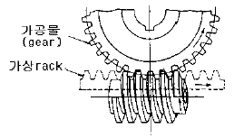
- 창성법
- 형판법
- 성형법
- 밀방법
(정답률: 70%)
33. 기계 가공 후 일감에 생기는 거스러미는 무엇으로 제거 하는가?
- 쇠톱
- 줄
- 스크레이퍼
- 정
(정답률: 90%)
34. CAD/CAM 시스템을 효율적으로 운영하기 위해서는 전문가가 필요하다. 오퍼레이터로 전문가 선발시 고려 사항으로 거리가 먼 것은?
- 해당 기술 업무 분야에 정통할 것
- 신기술의 적용 및 개발에 개방적, 적극적일 것
- 건강하고 장기 근속이 가능할 것
- 관리 지향적인 능력을 구비할 것
(정답률: 49%)
35. 공작물을 지그 중앙에 클램핑 시키고 지그를 회전시켜 가면서 공작물의 위치를 다시 결정하지 않고 전면을 가공 완성할 수 있는 지그는?
- 박스 지그(box jig)
- 채널 지그(channel jig)
- 리프 지그(leaf jig)
- 분할 지그(indexing jig)
(정답률: 63%)
36. 비금속 스프링에 해당하지 않은 것은?
- 고무 스프링
- 합성수지 스프링
- 코일 스프링
- 유체 스프링
(정답률: 80%)
37. 전단하중을 전단면적으로 나눈 것은?
- 전단응력
- 인장응력
- 압축응력
- 휨응력
(정답률: 89%)
38. 표준형 고속도강의 성분이 바르게 표기된 것은?
- 18% W - 4% Cr - 1% V
- 14% W - 4% Cr - 1% V
- 18% Cr - 8% Ni
- 14% Cr - 8% Ni
(정답률: 80%)
39. 체인(chain)의 특징 중 틀린 것은?
- 접촉각은 90° 이상이면 좋다.
- 유지 및 수리가 용이하다.
- 내열, 내유, 내습성이 강하다.
- 미끄럼이 많지만 일정한 속도비가 얻어진다.
(정답률: 54%)
40. 내연기관의 피스톤 등 자동차 부품으로 많이 쓰이는 Al 합금은?
- 실루민
- 라우탈
- Y 합금
- 두랄루민
(정답률: 66%)
3과목: 임의구분
41. 다음중 구리 4%, 마그네슘 0.5%, 망간 0.5%, 나머지가 알루미늄인 고강도 알루미늄 합금은?
- 실루민
- 두랄루민
- 라우탈
- 로우엑스
(정답률: 81%)
42. 축이음에서 운전중 결합을 단속할 수 있는 가동축이음은?
- 클러치
- 고정 커플링
- 원통 커플링
- 플랙시블 커플링
(정답률: 60%)
43. 인장 시험에서 시험전 표점 거리가 50mm인 시험편을 시험후 파단된 표점거리를 측정하였더니 60mm가 되었다. 이 시험편의 연신율은 얼마인가?
- 10%
- 15%
- 20%
- 30%
(정답률: 60%)
44. 철강의 분류는 어떤 기준으로 하는가?
- 제철법
- 탄소의 함유량
- 철강의 성질
- 철강의 조직
(정답률: 72%)
45. 구리의 특성으로 틀린 것은?
- 비중이 8.9이며 용융점이 1083℃ 이다.
- 전연성이 좋으나 가공이 용이하지 않다.
- 전기 및 열의 전도성이 우수하다.
- 아름다운 광택과 귀금속적 성질이 우수하다.
(정답률: 75%)
46. 냉각이 쉽고 큰 회전력의 제동이 가능한 브레이크는?
- 원판 브레이크
- 복식 블록 브레이크
- 벤드 브레이크
- 자동하중 브레이크
(정답률: 52%)
47. 베어링의 설명 중 틀린 것은?
- 슬라이딩 베어링은 미끄럼 접촉이다.
- 레이디얼 베어링은 축 방향의 하중을 받는다.
- 구름 마찰이 미끄럼 마찰보다 마찰 계수가 적다.
- 롤링 베어링은 구름 접촉이다.
(정답률: 45%)
48. 다음 중 P원소나 S원소를 첨가하여 절삭성을 향상시킨 특수강을 무엇이라 하는가?
- 내열강
- 내부식강
- 쾌삭강
- 내마모강
(정답률: 85%)
49. 다음중 유체가 나사의 접촉면 사이로 새는 것을 방지하는 너트는?
- 슬리브 너트
- 플랜지 너트
- 아이 너트
- 캡 너트
(정답률: 78%)
50. 다음 중 보스에만 키 홈을 파는 키는?
- 성크 키
- 스플라인 키
- 접선 키
- 새들 키
(정답률: 59%)
51. 도면에서 특수한 가공을 하는 부분 등 특별한 요구사항을 적용할 범위를 표시하는 특수 지정선은?
- 가는 일점 쇄선
- 이점 쇄선
- 굵은 일점 쇄선
- 굵은 실선
(정답률: 62%)
52. 표면기호의 구성에서 가공으로 생긴선이 다방면으로 교차 또는 무방향인 가공 모양의 기호는?
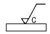
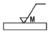
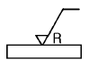
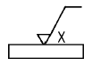
(정답률: 71%)
53. 보기 그림과 같은 도면은 무슨 기어를 나타내는가?
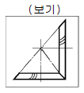
- 헬리컬 기어
- 직선베벨 기어
- 스파이럴베벨 기어
- 웜 기어
(정답률: 77%)
54. 보기 입체도의 화살표 방향 투상도로 가장 적합한 것은?
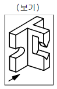
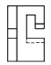
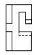
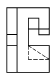
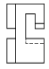
(정답률: 89%)
55. 보기 입체도에서 화살표 방향이 정면일 경우 평면도로 가장 적합한 것은?
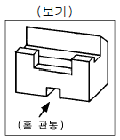
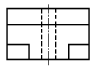
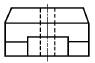
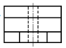
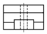
(정답률: 74%)
56. 다음 입체도에서 화살표 방향의 정면도로 적합한 것은?
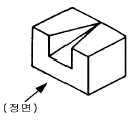
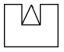
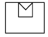
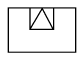
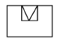
(정답률: 87%)
57. 치수 기입이 곤란한 좁은 곳에서의 KS 기계제도에 의한 치수 기입방법으로 가장 적합한 것은?
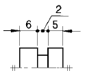
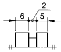
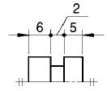
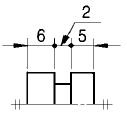
(정답률: 53%)
58. 기하 공차의 종류와 기호가 맞는 것은?
- : 원통도 공차
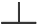
: 경사도 공차- : 동심도 공차
- : 진원도 공차
(정답률: 78%)
59. 보기 그림과 같이 도시된 단면도의 종류 명칭인 것은?
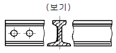
- 회전 도시 단면도
- 조합에 의한 단면도
- 부분 단면도
- 한쪽 단면도
(정답률: 86%)
60. 나사가 M 50 × 2 - 6 H 로 표시된 경우의 설명으로 틀린것은?
- 미터나사이다.
- 호칭지름이 50mm이다.
- 2줄 나사이다.
- 6H는 나사의 등급이다.
(정답률: 50%)